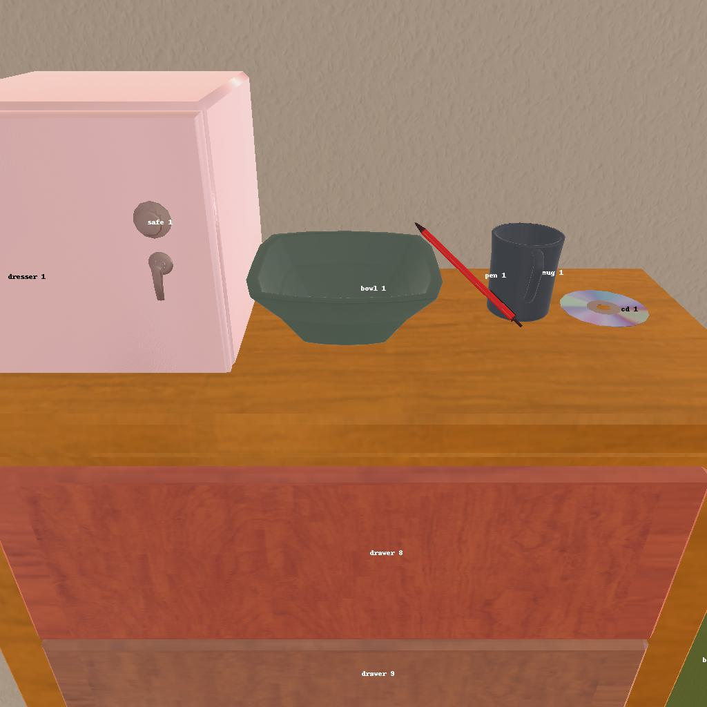

---------------------------------------------------------task: 6---------------------------------------------------------
--------------------------------------------------------------------------------------------------------------------------------------------------------------------
--------------------------------------------------------------------------------------------------------------------------------------------------------------------
Step:--------------------------------------------------------------------------6-------------------------------------------------------------------------------
----------------------------------------
VLM Prompt:
Image1:
Image2:
**Instruction**
1. Analyze the provided image to identify all visible household objects, focusing on those relevant to the task description "put some cd on safe."
2. Use the analysis of the image and the task hint "The agent must find an object of the desired type, pick it up, find the correct location to place it, and put it down there." to answer the question: what is the most reasonable action in the choices for the task description "put some cd on safe"?
4. Decide and write the answer using the template: The answer is: (i): , where i is the real number. If there is no desired object in the image, search every place based on **Initial Observation** to find the object. And if no one is exactly correct, choose a similar answer.
**Initial Observation**
You are in the middle of a room. Looking quickly around you, you can see bed (1-2), dresser (1), sidetable (1-2), drawer (1-11), desk (1), garbagecan (1), safe (1)
**Answer Choices**
(1): go to bed 1
(2): go to bed 2
(3): go to sidetable 1
(4): go to drawer 1
(5): go to drawer 2
(6): go to sidetable 2
(7): go to drawer 3
(8): go to drawer 4
(9): go to desk 1
(10): go to garbagecan 1
(11): go to drawer 5
(12): go to drawer 6
(13): go to drawer 7
(14): go to drawer 8
(15): go to drawer 9
(16): go to drawer 10
(17): go to drawer 11
(18): put cd 1 in/on dresser 1
(19): examine cd 1
(20): examine dresser 1
**Answer**
Let's think step by step by following the instructions.
----------------------------------------
----------------------------------------
Original Response:
First, we need to identify all visible household objects relevant to the task "put some cd on safe." In Image 1, we can see a safe (safe 1), a dresser (dresser 1), a bowl (bowl 1), a pen (pen 1), a mug (mug 1), and a CD (cd 1) on drawer 9. In Image 2, we can see the same objects, but the CD is now on the floor.
The task description "put some cd on safe" suggests that we need to find a CD and place it on the safe. Since we can see a CD (cd 1) in both images, we do not need to search every place based on Initial Observation.
The most reasonable action would be to pick up the CD from its current location and then put it on the safe. However, none of the given answer choices directly describe this action. The closest action that aligns with the task is to examine the CD and then the dresser, as this could initiate the process of picking up the CD. Since the CD is on or near the dresser, examining the dresser could also imply the intention to interact with objects on or in it.
Therefore, the answer is: (19): examine cd 1.
----------------------------------------
----------------------------------------
>>> Refine Original VLM Response and Get Pure Action: No action
----------------------------------------
-----------------------------------------------------------------
Running time: 11.455202341079712 seconds
Total Money: 2.5708300000000004
-----------------------------------------------------------------
-----------------------------------------------------------------
Text Observation:Nothing happens.
-----------------------------------------------------------------
UNSUCCEED